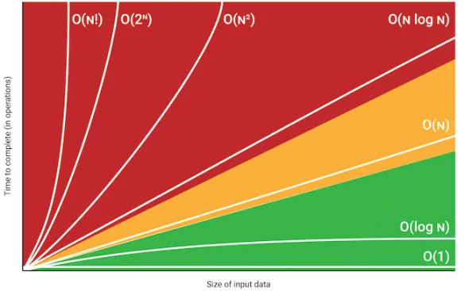

Algoritmo
¿Que es un algorimo?
Un algoritmo son el conjunto de instrucciones que se deben de seguir para realizar cierta actividad, como son desde mostrar en consola algun texto como "Hello, World!" o algo mas complejo como obtener el indice de algun elemento e incluso ordenar listas.
Big-O
Big-O es una medición en la que se toma en cuenta el peor de los casos por lo que es la que se utiliza para medir el tiempo estimado que tardara un programa en ejecutar el codigo.
Una vez calculado el tiempo de ejecucion de cada instrucción se suman y de esa suma se eliminan las constantes solo se toma el valor mas alto.
-
Las instrucciones multiplican el valor propio con el valor del bloque por lo que si
una instruccion esta dentro de un bloque multiplicara se costo real por el del
bloque.
Ej: costo del bloque O(log n), costo de la instruccion O(n). Bajo este contexto el costo total es de O(n log n). - Si un bucle va secuancialmente (suma o resta) tiene O(n).
- Si un bucle va potencialmente (multiplicación o división) tiene O(log n).
- Si un bucle va exponencialmente (elevación o raiz) tiene O(log log n).
- Si un bucle va exponencialmente (elevación o raiz) tiene O(log log n).
- Si una función se llama a sí misma k veces por nivel y cada llamada reduce el tamaño del problema (por ejemplo, n - 1), la complejidad es O(kn), salvo que haya optimizaciones como memoización.
- En caso de que no se cumpla ninguna de las condiciones anteriores se determina como complejidad constante O(1).